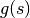
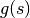
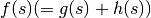
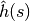

Chapter 5. 가중치와 최적화 프로그램¶
이 문서는 한빛미디어에서 나온 처음 배우는 인공지능 을 공부하면서 정리한 것이다.
01 그래프 이론¶

무향 그래프와 유향 그래프¶
- 무향 그래프 (undirected graph): 그래프의 간선에 방향이 없는 그래프
- 유향 그래프 (directed graph): 그래프의 간선에 방향이 있는 그래프
- 유향 순회 그래프 (directed cyclic graph): 어떤 노드에서 자신으로 돌아오는 path가 있는 그래프
- 유향 비순회 그래프 (directed acyclic graph): cycle 이 없는 유향 그래프 (책의 설명이 좀 이상합니다. - 어떤 정점에서 출발한 후 해당 정점에 돌아오는 경로가 하나인 그래프)
- 간선 가중 그래프: 간선에 가중치가 있는 그래프 (aka network)
- 정점 가중 그래프: 정점에 가중치가 있는 그래프 (aka network)
{kind=link}
02 그래프 탐색과 최적화¶
탐색 트리 구축¶
출발점에서 목적지까지를 노드로 정의하고 각 노드와 에지에 이익, 비용과 같은 평가 값을 저장해두고 목적지에 도달하는 최적 경로를 찾을 수 있도록 트리를 구축하는 것을 말하고자 합니다. 가장 대표적인 것이 데이터베이스의 인덱스에 사용하는 이진 탐색 트리나 미로 찾기같은 경로 탐색을 위한 트리가 있습니다.
{kind=link}
{kind=link}
효율 좋은 탐색 방법¶
비용이라는 개념없이 순서만 처리하는 깊이 우선 탐색이나 너비 우선 탐색에는 한계가 있기 때문에 비용이라는 개념을 바탕으로 효율을 높여야 합니다.
비용에 따른 탐색 방법¶
A* algorithm의 wiki 를 참조해서 일단 개념을 이해 하고 책 내용을 보는 것이 좋겠다.
예를 들어 부산에서 서울로 출발할 때 동대구를 통과하느냐 경주를 통과하느냐에 따라 시간과 비용에 차이가 나는데 이런 경우 우선 비용을 정의해야 합니다. 이 책에서는 비용에 대해 다음의 세종류를 들고 있습니다.
- 초기 상태 -> 상태
 의 최적 경로 이동에 드는 비용의 총합 
의 최적 경로 이동에 드는 비용의 총합  - 상태 -> 목표하는 최적 경로 이동에 드는 비용의 총합

- 상태 를 거치는 초기 상태 -> 목표의 최적 경로 이동에 드는 비용의 총합 
 를 최소화 하도록 노드 선택: 최적 탐색이라고 함 (optimal search). 탐색량이 많은 단점
를 최소화 하도록 노드 선택: 최적 탐색이라고 함 (optimal search). 탐색량이 많은 단점
 를 최소화 하도록 노드 탐색: 최선 우선 탐색 (Best-first search). 잘못 된 결과가 나올 수 있는 단점